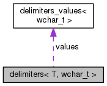

noparama
v0.0.1
Nonparametric Bayesian models
Static Public Attributes
|
List of all members
delimiters< T, wchar_t > Struct Template Reference
#include <
pretty_print.hpp
>
Collaboration diagram for delimiters< T, wchar_t >:

[
legend
]
Static Public Attributes
static const
delimiters_values
< wchar_t >
values
= { L"{ ", L", ", L" }" }
Member Data Documentation
◆
values
template<typename T >
const
delimiters_values
< wchar_t >
delimiters
< T, wchar_t >::values = { L"{ ", L", ", L" }" }
static
The documentation for this struct was generated from the following file:
include/
pretty_print.hpp
Generated by
1.8.13
 1.8.13
1.8.13